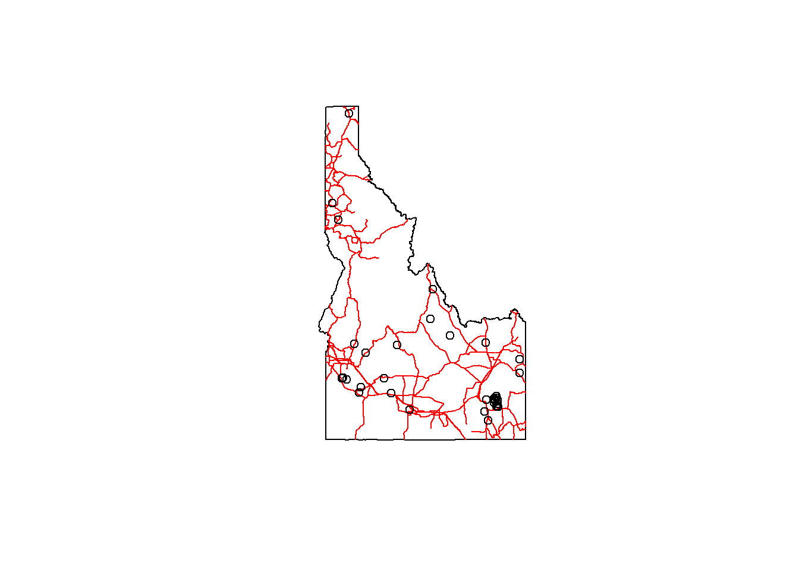
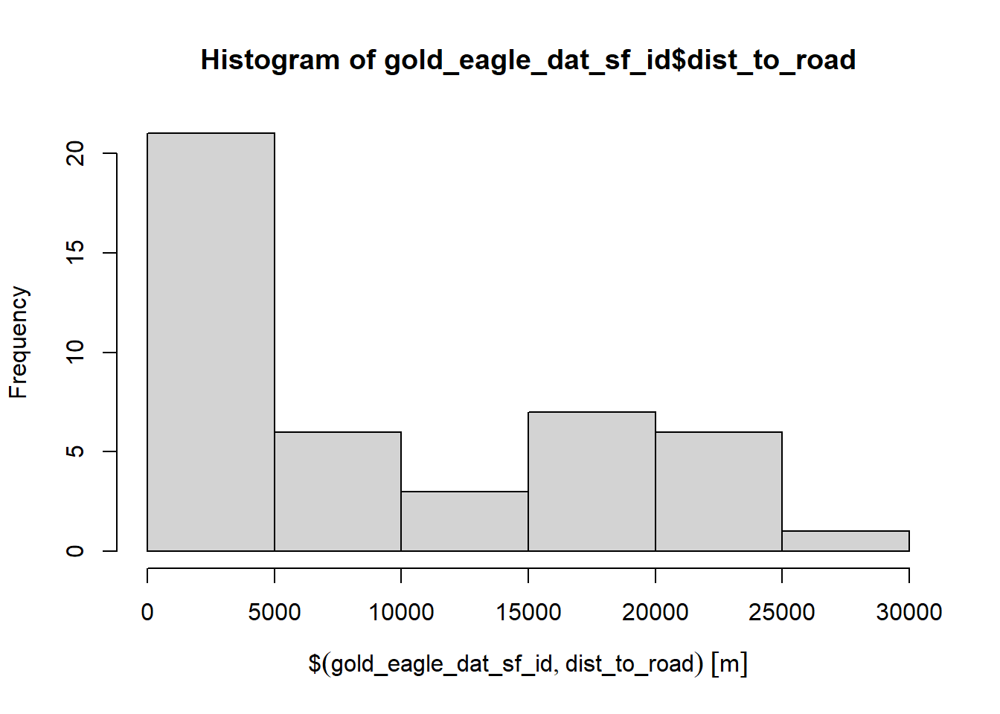

── Conflicts ────────────────────────────────────────── tidyverse_conflicts() ──
✖ dplyr::filter() masks stats::filter()
✖ dplyr::lag() masks stats::lag()
ℹ Use the conflicted package (<http://conflicted.r-lib.org/>) to force all conflicts to become errors
Warning in CPL_crs_from_input(x): GDAL Message 1: CRS EPSG:2163 is deprecated.
Its non-deprecated replacement EPSG:9311 will be used instead. To use the
original CRS, set the OSR_USE_NON_DEPRECATED configuration option to NO.
Code
#get index of nearest ID citynearest <-st_nearest_feature(ua)#estimate distance(dist =st_distance(ua, ua[nearest,], by_element=TRUE))
# get a selection of 1000 observations from rgbifgold_eagles_us <-occ_search(scientificName ="Aquila chrysaetos", country ="US",hasCoordinate =TRUE,limit=1000)# This step has to be separate, it can't be piped into the next bit of codegold_eagles_us <- gold_eagles_us$data# convert to spatial objectgold_eagle_dat_sf <- gold_eagles_us %>%filter(!is.na(decimalLatitude) &!is.na(decimalLongitude)) %>%st_as_sf(coords =c("decimalLongitude", "decimalLatitude"), crs =4326)# get roadsroads <- tigris::primary_secondary_roads("ID") %>%st_transform(crs=4326)
# spatial subset to points in Idahoidaho <-st_transform(idaho, crs=4326)gold_eagle_dat_sf_id <- gold_eagle_dat_sf[idaho, ]# check plotplot(st_geometry(idaho))plot(st_geometry(roads), col="red", add=TRUE)plot(st_geometry(gold_eagle_dat_sf_id), add=TRUE)

Code
# get nearest road for each pointnearest_road <-st_nearest_feature(gold_eagle_dat_sf_id, roads)# get distance to nearest road for each pointgold_eagle_dat_sf_id <- gold_eagle_dat_sf_id %>%mutate(dist_to_road =st_distance(., roads[nearest_road,], by_element =TRUE))# now we can investigate# for example...hist(gold_eagle_dat_sf_id$dist_to_road)

Source Code
---title: "Session 15 Code"author: "Carolyn Koehn"format: html---Please install and load these packages:```{r}# install.packages('rgbif')library(rgbif)library(sf)library(tidyverse)library(spData)```## Create new spatial attributes```{r}nz.sf <- nz %>%mutate(area =st_area(nz))head(nz.sf$area, 3)``````{r}# generate random pointsrandom_long_lat <-data.frame(long =sample(runif(2000, min =1090144, max =2089533), replace = F),lat =sample(runif(2000, min =4748537, max =6191874), replace = F) )random_long_lat_sf <- random_long_lat %>%st_as_sf(coords =c("long", "lat"), crs =st_crs(nz))random_nz <- random_long_lat_sf[nz.sf,]# code from slidesnz.df <- nz %>%mutate(counts =lengths(st_intersects(., random_nz)),area =st_area(nz),density = counts/area)head(st_drop_geometry(nz.df[,7:10]))``````{r}canterbury = nz %>%filter(Name =="Canterbury")canterbury_height = nz_height[canterbury, ]co =filter(nz, grepl("Canter|Otag", Name))st_distance(nz_height[1:3, ], co)``````{r}library(tigris)ua <-urban_areas(cb =FALSE, progress_bar =FALSE) %>%filter(., UATYP10 =="U") %>%filter(., str_detect(NAME10, "ID")) %>%st_transform(., crs=2163)#get index of nearest ID citynearest <-st_nearest_feature(ua)#estimate distance(dist =st_distance(ua, ua[nearest,], by_element=TRUE))ua$dist_to_neighbor <- dist```### Topological Subsetting```{r}ctby_height <- nz_height[canterbury, ]ctby_height_diffpred <- nz_height[canterbury, ,op=st_touches]``````{r}canterbury_height3 = nz_height %>%filter(st_intersects(x = ., y = canterbury, sparse =FALSE))# to fix warningcanterbury_height3 = nz_height %>%filter(as.vector(st_intersects(x = ., y = canterbury, sparse =FALSE)))```### Spatial Joins```{r}set.seed(2018)(bb =st_bbox(world)) # the world's bounds#> xmin ymin xmax ymax #> -180.0 -89.9 180.0 83.6random_df =data.frame(x =runif(n =10, min = bb[1], max = bb[3]),y =runif(n =10, min = bb[2], max = bb[4]))random_points <- random_df %>%st_as_sf(coords =c("x", "y")) %>%# set coordinatesst_set_crs("EPSG:4326") # set geographic CRSrandom_joined =st_join(random_points, world["name_long"])``````{r}any(st_touches(cycle_hire, cycle_hire_osm, sparse =FALSE))``````{r}z =st_join(cycle_hire, cycle_hire_osm, st_is_within_distance, dist =20)nrow(cycle_hire)``````{r}nc <-st_read(system.file("shape/nc.shp", package="sf")) %>%st_transform(crs=4326)bb <-st_bbox(nc)nc_points <-data.frame(x =runif(n =2, min = bb[1], max = bb[3]),y =runif(n =2, min = bb[2], max = bb[4])) %>%st_as_sf(., coords =c("x", "y"), crs=4326)tr_buff <-st_buffer(nc_points, units::set_units(100, "km")) %>%st_transform(crs=4326)intersect_pct <-st_intersection(nc, tr_buff) %>%mutate(intersect_area =st_area(.)) %>%# create new column with shape area dplyr::select(NAME, intersect_area) %>%# only select columns needed to mergest_drop_geometry()nc <-mutate(nc, county_area =st_area(nc))# Merge by county namenc <-left_join(nc, intersect_pct)# Calculate coveragenc <- nc %>%mutate(coverage =as.numeric(intersect_area/county_area)) %>%mutate(coverage =ifelse(test =is.na(coverage),yes =0,no = coverage))plot(nc["coverage"])```### PracticeWhat is the relationship between observations of golden eagles and distance to a main road?```{r}idaho <- tigris::states() %>%filter(NAME =="Idaho")# get a selection of 1000 observations from rgbifgold_eagles_us <-occ_search(scientificName ="Aquila chrysaetos", country ="US",hasCoordinate =TRUE,limit=1000)# This step has to be separate, it can't be piped into the next bit of codegold_eagles_us <- gold_eagles_us$data# convert to spatial objectgold_eagle_dat_sf <- gold_eagles_us %>%filter(!is.na(decimalLatitude) &!is.na(decimalLongitude)) %>%st_as_sf(coords =c("decimalLongitude", "decimalLatitude"), crs =4326)# get roadsroads <- tigris::primary_secondary_roads("ID") %>%st_transform(crs=4326)# check plotplot(st_geometry(idaho))plot(st_geometry(roads), col="red", add=TRUE)plot(st_geometry(gold_eagle_dat_sf), add=TRUE)# spatial subset to points in Idahoidaho <-st_transform(idaho, crs=4326)gold_eagle_dat_sf_id <- gold_eagle_dat_sf[idaho, ]# check plotplot(st_geometry(idaho))plot(st_geometry(roads), col="red", add=TRUE)plot(st_geometry(gold_eagle_dat_sf_id), add=TRUE)# get nearest road for each pointnearest_road <-st_nearest_feature(gold_eagle_dat_sf_id, roads)# get distance to nearest road for each pointgold_eagle_dat_sf_id <- gold_eagle_dat_sf_id %>%mutate(dist_to_road =st_distance(., roads[nearest_road,], by_element =TRUE))# now we can investigate# for example...hist(gold_eagle_dat_sf_id$dist_to_road)```